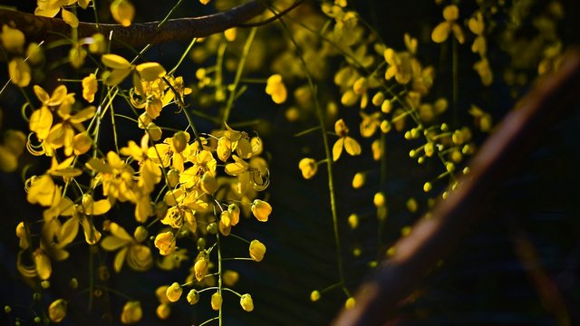
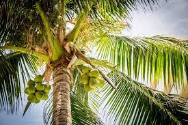
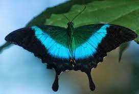
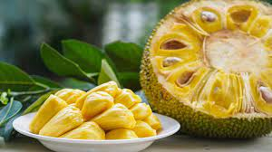

Kerala, southwestern coastal state of India. It is a small state, constituting only about 1 percent of the total area of the country. Kerala stretches for about 360 miles (580 km) along the Malabar Coast, varying in width from roughly 20 to 75 miles (30 to 120 km). It is bordered by the states of Karnataka (formerly Mysore) to the north and Tamil Nadu to the east and by the Arabian Sea to the south and west; it also surrounds Mahe, a segment of the state of Puducherry, on the northwestern coast. The capital is Thiruvananthapuram (Trivandrum).
Although isolated from the Indian interior by the mountainous belt of the Western Ghats, Kerala has been exposed to many foreign influences via its long coastline; consequently, the state has developed a unique culture within the subcontinent, not only with a diverse religious tradition but also with its own language, Malayalam. Also notable is the high social status that continues to be accorded to women of Kerala, owing to the former strength of a matrilineal kinship system. Area 15,005 square miles (38,863 square km). Pop. (2011) 33,387,677. Kerala is first mentioned (as Keralaputra) in a 3rd-century-BCE rock inscription left by the Mauryan emperor Ashoka. In the last centuries BCE this region became famous among the Greeks and Romans for its spices (especially pepper). During the first five centuries CE the region was a part of Tamilakam—the territory of the Tamils—and thus was sometimes partially controlled by the eastern Pandya and Chola dynasties, as well as by the Cheras. In the 1st century Jewish immigrants arrived, and, according to local Christian tradition, St. Thomas the Apostle visited Kerala in the same century (see St. Thomas [Mar Thoma] Christians).
| State Emblem | Emblem of Kerala |  |
| State Animal | Indian Elephant |  |
| State Bird | Great HornBill |  |
| State Flower | Kanikonna |  |
| State Tree | Cococnut Tree |  |
| State Butterfly | Malabar Banded Peacock |  |
| State Fruit | Jack Fruit |  |
The cultural heritage of Kerala reflects extensive interaction with diverse communities from antiquity to the present. With an array of ancient Hindu temples with copper-clad roofs, later mosques with “Malabar gables” (triangular projections at the rooftops), and Baroque churches from the Portuguese colonial era, the state’s architecture offers a chronicle of the social, spiritual, and political history of the area. Other characteristically Keralan art forms include intricate paintings on wood, thematic murals, and a remarkable variety of indoor and outdoor lamps (from which the state has earned the sobriquet “Land of Lamps”).
Literature and learning, in both Tamil and Sanskrit, have flourished since the 2nd century CE; meanwhile, the Malayalam language, though an offshoot of Tamil, has absorbed much from Sanskrit and also has a prolific literature. Notable names in Malayalam poetry are Tunchattu Eluttaccan and Kuncan Nampiyar among classical poets and Kumaran Asan and Vallathol in the 20th century. In 1889 Chandu Menon wrote Indulekha, the first outstanding novel in Malayalam, for which he received a certificate from Queen Victoria. Thakazhi Sivasankara Pillai, who produced hundreds of works before his death in 1999, has remained among the most widely read Malayali novelists.
Kerala is a region of great natural beauty. In the eastern part of the state, Anai Peak (8,842 feet [2,695
metres]), the highest peak of peninsular India, crowns
the Western Ghats. Descending from the rocky highlands westward toward the coastal plain is a stretch of
farmlands, with different crops cultivated at different elevations.
Along the coast, a linked chain of lagoons and backwaters form the so-called Venice of India. Among the more
important rivers that flow to the Arabian Sea are the Ponnani
(Bharatapuzha), Periyar, Chalakudi, and Pamba.
The climate of Kerala is equable and varies little from season to season. Throughout the year, daily temperatures usually rise from the low 70s F (low 20s C) into the 80s F (27 to 32 °C). The state is directly exposed to the southwest monsoon, which prevails from July through September, but it also receives rain from the reverse (northeast) monsoon, which blows in October and November. Precipitation averages about 115 inches (3,000 mm) annually statewide, with some slopes receiving more than 200 inches (5,000 mm).
The watery coastal zones of Kerala are interspersed with coconut palm groves, while much of the Western Ghats and riverine areas are covered with rainforests and monsoon forests (tropical deciduous forests). Rolling grasslands are typical of the upland region. This diverse natural environment is home to an extraordinary array of wildlife. Mammals include sambar deer, gaurs (wild cattle), Nilgiri tahrs (wild goatlike animals; Hemitragus hylocrius, or, by some classifications, Nilgiritragus hylocrius), elephants, leopards, tigers, bonnet monkeys, rare lion-tailed macaques (Macaca silenus), and Hanuman and Nilgiri langurs (Semnopithecus entellus and Trachypithecus johnii, respectively). King cobras (Ophiophagus hannah) are among the notable reptiles, while peacocks and hornbills are common birds. The state has several national parks and wildlife sanctuaries, among which the Periyar National Park and Tiger Reserve is the largest.
The state maintains a relatively high standard of health service. A comprehensive health insurance plan is available for workers in a number of professions, and free medical treatment is offered in many hospitals, health centres, and dispensaries. Among the top priorities of government health schemes have been the establishment of health care facilities in rural areas, the promotion of family planning, prevention of blindness, and control of communicable diseases such as leprosy, tuberculosis, and malaria.
Kerala has one of the most advanced educational systems and highest levels of literacy in India. Elementary education is compulsory between the ages of 6 and 14. There are primary, middle, and secondary schools, as well as polytechnical and industrial training institutes, arts and science colleges, and professional colleges. Kerala also has several universities, including the University of Kerala (1937) in Thiruvananthapuram, the University of Calicut (1968) in Kozhikode, Cochin University of Science and Technology (1971) in Kochi, and Kerala Agricultural University (1971) in Thrissur.
Aside from agriculture, manufacturing and service activities are important contributors to Kerala’s economy. Traditional cottage industries, such as weaving, the production of coconut fibre, and cashew processing, employ many workers in the manufacturing sector. Of the medium- and large-scale industries, food processing is the principal employer. Other major manufactures include fertilizers, chemicals, electrical equipment, titanium, aluminum, plywood, ceramics, and synthetic fabrics. Banking, finance, and other components of the services sector also employ a significant segment of the state’s workforce. However, unemployment has remained acute, with the state’s high level of education among the jobless exacerbating the problem.

Kerala has well-developed road and railway systems. It is connected with the states of Tamil Nadu and Karnataka by national highways. A railway coming from the east through the Palghat Gap in the Western Ghats meets with a railway running from north to south through the state and on to Kanniyakumari, the southernmost town of India. There is a major port at Kochi and intermediate ports at Kozhikode, Alappuzha, and Neendakara (near Thiruvananthapuram); all handle coastal and foreign traffic. Kochi also has major shipyard and oil refining facilities and serves as a district headquarters for the Indian coast guard and as a regional headquarters for the navy. More than 1,000 miles (1,600 km) of inland waterways form the main arteries for carrying bulk freight to and from the ports. Thiruvananthapuram, Kozhikode, and Kochi have international airports.
Kerala lacks major reserves of fossil fuels. However, there are moderate deposits of ilmenite (the principal ore
of titanium), rutile (titanium dioxide), and monazite
(a mineral consisting of cerium and thorium phosphates), all of which are found in beach sands. Other minerals
include limestone, iron ores, and bauxite (the principal
ore of aluminum). The state is especially known for its high-quality kaolin (china clay), which is used to make
porcelain.
Kerala has great hydroelectric potential, with some two dozen hydroelectric stations operating within the state.
Several thermal plants supply additional energy, and in
the late 20th century the state began to establish wind farms. Despite its wealth of renewable resources for
power generation, Kerala has continued to import some of its
electricity from elsewhere in India.
Agriculture is the state’s main economic activity. Commercial plantings on less than half of the total land under cultivation earn a sizable amount of foreign exchange but have necessitated the importation of food for local consumption. Kerala’s principal cash crops are rubber, coffee, and tea, which are cultivated in plantations on the slopes of the foothills, as well as areca nut, cardamom, cashew nut, coconut, ginger, and pepper. The major food crops are rice, pulses (e.g., peas and beans), sorghum, and tapioca. Commercial poultry farming is well developed.
The forests yield valuable timbers such as ebony, rosewood, and teak. In addition, Kerala’s woodlands supply industrial raw materials such as bamboo (used in the paper and rayon industries), wood pulp, charcoal, gums, and resins. The state is also a national leader in fish production. Sardines, tunas, mackerels, and prawns are among the principal products of the industry.